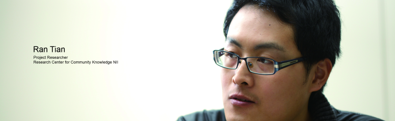
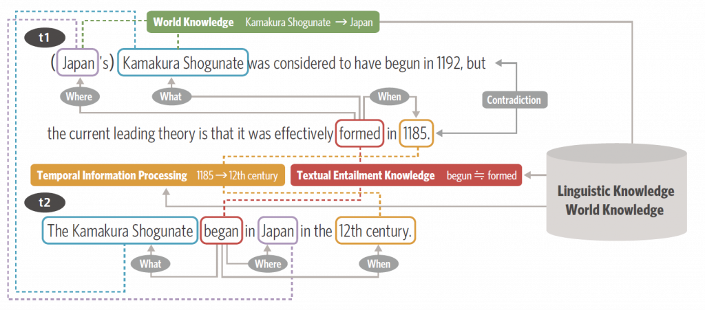

Social Studies Questions Require
Understanding, Not Mere Rote Memorization
Social studies exam questions are, for people, purely memorization questions, and might seem easy for computers, with their exceptional memories. However, the reality is that they cannot be answered with rote memorization alone. One of the critical factors in answering social studies questions is how well the computer can understand the question text, and how well it can identify mistakes. The key to accomplishing these successfully is the natural language processing technology "textual entailment recognition".

Making computers
understand the meaning of
text
Within the entrance exam questions to be tackled by the Todai Robot project, social studies questions, regarding history, geography, modern society, politics, and economics, are especially focused on memorized knowledge. It is tempting to believe that with a large database and search technologies, these questions would be easy for a computer to answer. Reality, however, is not so simple.
"For example, to answer questions such as 'Who was the third shogun of the Edo Shogunate?', a database search would be enough to produce an answer. That's not what entrance exam questions are like, though. The National Center Test for University Admissions test has examinees select the correct statement from a list of statements. If identical statements were found in the database, it could be answered through simple matching, but in reality, statements with the same meaning are expressed in various ways. A simple illustration: are 'Tokyo' and 'Tokyo-to (Tokyo metropolis)' the same, or different? Getting a computer to differentiate between those is no trivial matter," says Hiroshi Kanayama of IBM Research - Tokyo, who was involved in the development of the Watson question answering system.
The key to resolving this issue is textual entailment recognition, an important technology in the field of natural language processing. What kind of technology is it? Assistant Professor Yotaro Watanabe of the Graduate School of Information Sciences at Tohoku University explains, "Natural language processing is, simply put, a technology that enables computers to understand the language we use every day. It takes sentences, which otherwise would be nothing more than strings of characters to a computer, and divides them into individual words, analyzes the structure of the sentence, and then structures it in order to provide it with meaning. Within this process, textual entailment recognition is a technology for determining if there is an entailment relation between two sentences — that is, if two sentences mean the same thing even if they use different expressions.
Developing textual entailment
recognition technologies
NTCIR RITE
Textual entailment recognition can be thought of as a technology whose aim is to enable computers to understand human language, not on just the individual word level, but on the text level as well. It has drawn attention recently for its potential to make more advanced natural language processing possible.
In Japan, NII sponsors the NTCIR international workshop, whose objective is the improvement of natural language processing and information access technologies. In 2011, a new NTCIR task called RITE was created, focused on textual entailment recognition. In RITE, teams apply their own unique approaches to textual entailment recognition evaluation data in order to evaluate their methodologies. Various evaluation data is used, but one example of a RITE task would be to determine whether there is an entailment relation between the following two sentences.
- t1 The Kamakura Shogunate was considered to have begun in 1192, but the current leading theory is that it was effectively formed in 1185.
- t2 The Kamakura Shogunate began in Japan in the 12th century.
"For us humans, it's easy to determine that if t1 is true, t2 is true as well. However, to get a computer to understand it, you must first have it analyze the semantic structure, 'The Kamakura Shogunate was established (in) 1185.' Furthermore, you must use knowledge regarding language, and knowledge regarding the real world, to have it absorb differences in expressions and supplement the statements with information which can be inferred based on common sense knowledge, in order to infer the relationship between the two sentences," said Assistant Professor Watanabe (see figure).
It is hoped that RITE, which uses different methods for these processes, comparing and evaluating the methodologies, will accelerate the advancement of textual entailment recognition technology.
"In my case, I was able to produce good RITE scores using my logical inference-based approach, which also shares some aspects of my past mathematical research. However, the difficulty with using logic is the diversity of natural language expressions. It is extremely difficult for a computer to evaluate whether the meanings of two statements are fundamentally the same, and just use different expressions. On the other hand, that's also one of the most interesting aspects of this research," said RITE participant and NII Project Researcher Ran Tian.

Deepening the world of
human knowledge
One of the materials which can be used to test the results of NTCIR RITE are the social studies exam questions to be answered by Todai Robot Project. In the first stage target, the center test, the Todai Robot Project will have to understand the meanings of questions, and determine whether individual statements in a list of choices are correct or incorrect. This can be done by determining whether the choices have the same meanings as statements in a collected body of knowledge, such as a textbook or Wikipedia, and using inference and textual entailment recognition. Cutting-edge textual entailment recognition technology is now able to correctly answer over 50% of the center test knowledge-testing questions. There are still many questions it cannot answer, and researchers are trying to improve recognition accuracy.
There is, however, more than one potential approach.
"We tested another method, besides textual entailment recognition, by seeing if Watson, a system which was developed to answer quiz-style questions, could answer center test world history true/false questions that had been translated into English. We looked at a sentence requiring a true/false decision, and, considering keywords within it as potentially false, asked the question answering system what word made the statement true. Using this technique, sometimes the computer could automatically confirm what knowledge is required for examinees in the center test," explained Kanayama.
Correctly answering university entrance exam questions is a major milestone for natural language processing technologies such as textual entailment recognition, but is not the ultimate objective. Expectations are high for this challenge to produce various technologies that will improve our daily lives.
Kanayama said, "by gaining knowledge out of large volumes of data, I hope to create technologies that support human intellectual activities." Assistant Professor Watanabe expressed his hope to "organize the massive volume of disordered information on the web along the lines of specific objectives, tying it together with true/false determination systems." Project Researcher Tian said, "What I ultimately hope to achieve is the realization of human-like thought processes on computers." Each researcher has their own goals, but the advances they will achieve in the field, and the deepened natural language comprehension their research will provide computers with, is certain to make the world of human knowledge an even more profound one.
(Written by Akiko Seki)